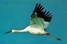

| Experience My interest in birds dates back to my childhood, but I started serious birdwatching in 1982. There are more than 450 species of birds in Iran. I have set a goal of seeing all these species and so far have been able to see more than 300 of them. Here is a report about birds of Iran. Since 2001 I have been based in the US. For sometime I lived in Cardiff, near San Diego, California. Here for three years I almost daily visited the San Elijo Lagoon enjoying its nice scenery and watching birds. | Rare Birds | One of the more interesting birds to be seen in Iran is the Siberian white crane (Grus leucogeranus). Iran is one of the few countries in which this bird can be seen. The other countries are Russia, China, and India. In 1994 we went to a fact finding trip to eastern Iran, bordering Afghanistan, to verify the news about a flock of cranes in the region. It was evident that there are two Siberian Cranes in the flock. The major grouping, however, winter in the northern part of Iran where about ten Siberian cranes spend their winter in Ezbaran area, near Babolsar. |  |
Pleske Ground Jay (Podoces pleskeiis) a bird found only in Iran and Western Pakistan. It breeds in deserts with short bushes of the central desert of Iran. I have seen it many times near Moaleman, on the Damqan-Jandaq road. The bird flies poorly, but runs fast. It is shy and difficult to see. Click on the picture to see a larger photo, by Mr. Darreh-Shouri. | | | Links International Crane Foundation 
Persian bird names and more List of Birds in Iran |